| 合同签订 |
| 招商立项 |
| 商业项目在招商时，需对潜在商户进行招商立项、合同签署等工作。招商立项、合同签署属于工作流管理范围。在系统中，工作流流转的依据是根据用户的系统角色和所在部门。 |
| 鉴于系统实施和项目进展考虑，前期工作流部分我们进行了简化处理，能够进行招商立项和合同签署的系统角色是财务会计（录入）、财务经理（审批）。 |
| >> 资料准备 |
| 用户角色是财务会计的用户登录后，在系统的工作流区（工作导航台）中，选择【租约管理】->【招商立项-临时】->【潜在商户录入-临时】，进入潜在商户资料准备界面，如下图（图3-1）： |
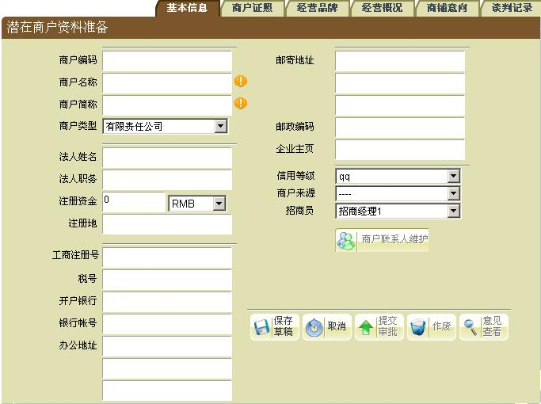 |
| 图(3-1) |
| 在“潜在商户资料准备”中，输入商户的基本信息，点“保存草稿”按钮，即保存了该商户的资料；点“取消”按钮，则放弃保存此次的资料输入。 |
| 输入完基本信息后，应输入“商户证照”信息，如下图（图3-2）： |
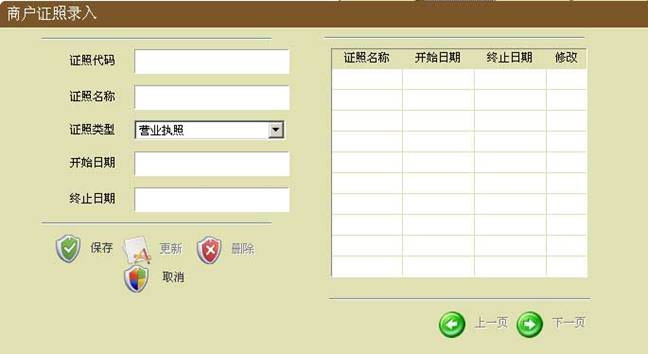 |
| 图(3-2) |
| 在“商户证照”中输入商户证照信息，点保存按钮，即可完成该商户的证照信息输入，并在列表中显示。 |
| 如需修改证照信息，选择需要修改的证照，将证照信息进行修改，再点“更新”按钮，即可完成对证照信息的修改。 |
| 此时“潜在商户证照”录入完成后，选择分栏【经营品牌】，界面如下图（图3-3）。 |
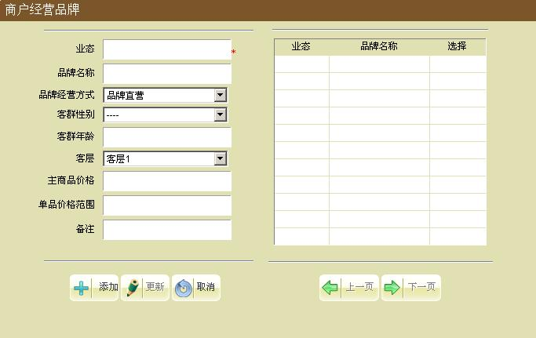 |
| 图(3-3) |
| 在“经营品牌”中输入经营品牌信息，点保存按钮，即可完成该商户的经营品牌信息的输入，并在列表中显示。 |
| 如需修改信息，选择需要要修改的品牌信息，将品牌信息进行修改，再点“更新”按钮，即可完成对商户经营品牌信息的修改。 |
| “经营品牌”录入完成后，选择分栏【经营概况】，界面如下图（图3-4）。 |
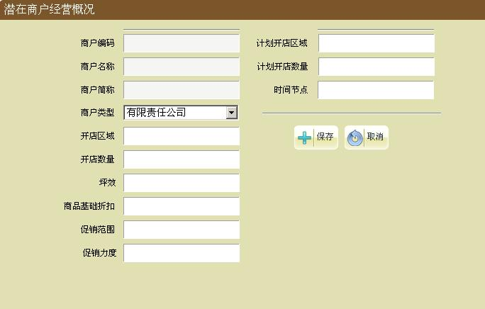 |
| 图(3-4) |
| 在“潜在商户经营概况”中，输入商户的经营概况，点“保存”按钮，即保存了该商户的资料；点“取消”按钮，则放弃保存此次的资料输入。 |
| 此时“潜在商户经营概况”录入完成后，选择分栏【商铺意向】，界面如下图（图3-5）。 |
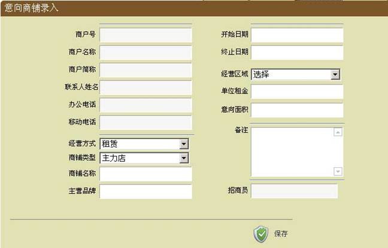 |
| 图(3-5) |
| 商铺意向分页中的数据在审批通过后会转入到合同录入中，所以该分页的项目需要录入完整；录入完成商铺意向后，保存；选择分栏【谈判记录】，进入招商洽谈记录界面，如下图（图3-6）。 |
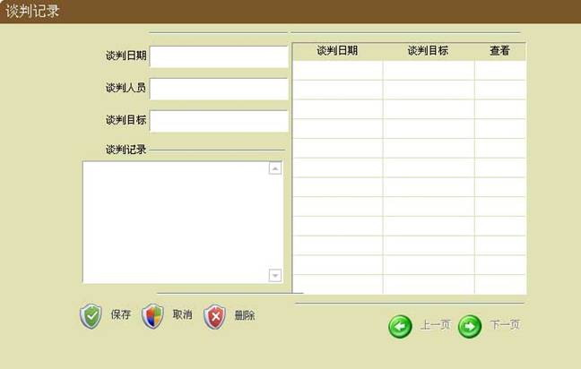 |
| 图(3-6) |
| 在双方招商洽谈基本确认后，需要进行招商立项的提交审批或作废工作。 |
| 在分栏【基本信息】界面，按钮“提交审批”是将之前录入的资料提交招商立项工作流的下一节点人员进行审批；按钮“作废”是确认本次结束同该潜在商户的招商工作，该潜在商户的本次招商立项将完成。系统自动保存该潜在商户基本资料和本次招商立项的相关资料。 |
| >> 立项审批 |
|
| 招商立项资料准备完整、提交审批后，用户角色是财务经理的用户登录后，在系统的工作流区（工作导航台）中，选择【租约管理】->【招商立项-临时】中潜在商户的名称，可以查看潜在商户的提交资料，界面如下图（图3-7），选择不同的分栏，查看不同类别的资料信息。 |
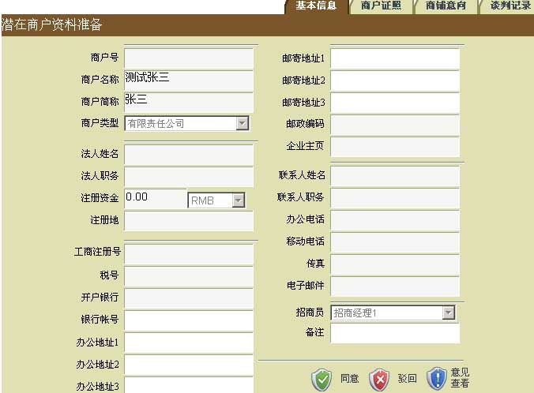 |
| 图(3-7) |
| 点“同意”按钮，即可以引进该商户，立项审批通过，进入到下一工作流环节---“合同签订”。 |
| 点“驳回”按钮，需填驳回意见，才可以驳回，驳回时弹出窗口，在弹出窗口中选择需要驳回的步骤，即可完成驳回到选择的步骤。 |
| 当审批同意时，进入到下一工作流环节；根据潜在商户经营方式的不同，转到相应的合同签订流程：租赁合同签订、联营合同签订。 |
|
| 租赁合同 |
| >> 合同录入 |
| 立项审批通过之后，进入到合同工作流环节。用户角色为财务会计的用户登录到系统后，选择系统的工作流区（工作导航台）中，选择【租约管理】->【租赁合同-临时】中的商户名称，进入租赁合同录入，界面如下图（图3-8）： |
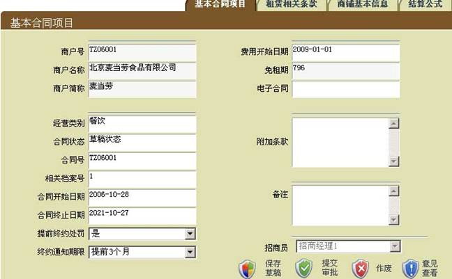 |
| 图(3-8) |
| 基本合同项目：在此界面输入合同的基本信息。 |
| 租赁相关条款：输入租赁合同的相关信息。界面如下图（图3-9）： |
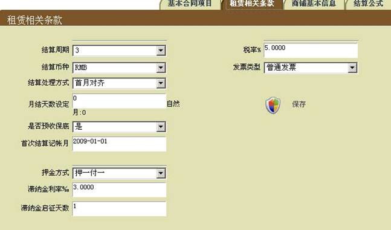 |
| 图(3-9) |
| 结算周期：计算费用时，一次生成月费用的数量； |
|
结算处理方式：合同费用不从１号开始生成的处理方式，首月对齐就是第一次收费时，费用结束日期结算到当月的最后一天；次月对齐就是第一次收费时，按照满月结算，第二个月结算到当月最后一天。 |
| 商铺基本信息：该合同所对应的商铺信息。如下图（图3-10）： |
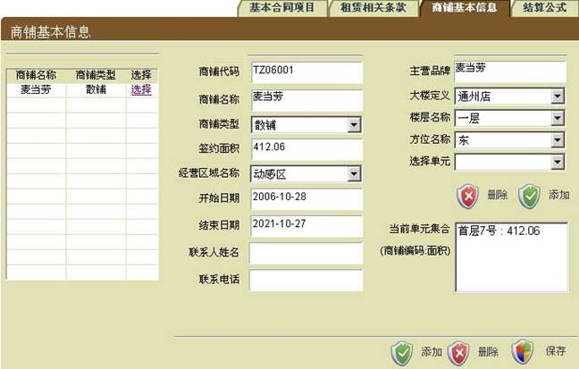 |
| 图(3-10) |
| 进入“商铺基本信息”，此时的商铺信息是立项时商户所选的意向商铺，将商铺的相关信息输入完整，点“保存”按钮，完成对该合同所对应商铺的保存。 |
| 结算公式：输入对合同费用进行计算的公式。界面如下图（图3-11）： |
| 下图中，公式列表中将该份合同不同时间段收取的所有费用类型的费用都呈现出来。 |
| 针对同一种费用类别的公式，必须完整的覆盖合同费用开始日期到合同终止日期；费用类型的公式类别如果是一次性收取的，在“基本租金”中录入一次性收取的金额，系统将会在该公式的开始日期收取该费用；费用类型的公式类别是固定的，在“固定租金”中进行录入，选择“月租金”，则每月收取“租金额”中录入的金额，选择“日租金”则收取合同“租赁相关条款”中“月结天数设定”的值和“租金额”的值相乘得到的金额；费用类型的公式类别是抽成保底的，在“抽成与保底”中进行录入，系统会比较抽成与保底两者的大小，并取其高者为费用类别的应收金额。 |
| 在录入公式类别是“抽成与保底”的公式时，需要先录入费用类别、公式类别、开始结束日期后进行保存，再在公式列表中选择刚才录入的公式，再录入“抽成与保底”的相关信息进行保存。 |
| 在录入“年度抽成”时，需要将该条公式的开始结束日期设定为一个年度周期；如果合同期限由３年，则需要录入３天年度抽成公式。 |
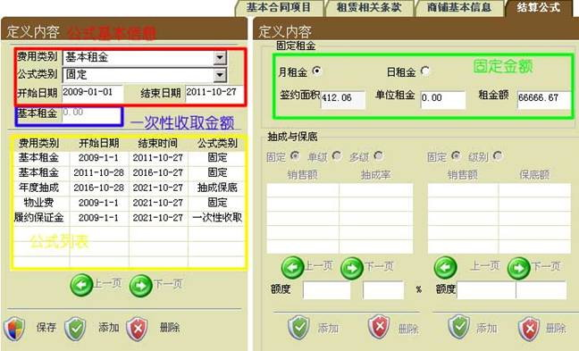 |
| 图(3-11) |
| 将所有合同信息输入完整后，可以在“基本合同项目”界面中点“保存草稿”按钮，将合同保存为草稿形式，合同工作流还停留在合同录入步骤；点“提交审批”按钮，将该合同提交给上级审批，进入合同审批工作流环节。 |
| >> 合同审批 |
| 租赁合同录入完成并提交审批后，用户角色是“财务经理”的用户进入系统，选择系统的工作流区（工作导航台）中，选择【租约管理】->【租赁合同-临时】中的商户名称，进入租赁合同审批，界面如下图（图3-12）,选择不同的分栏查看相应的录入合同数据： |
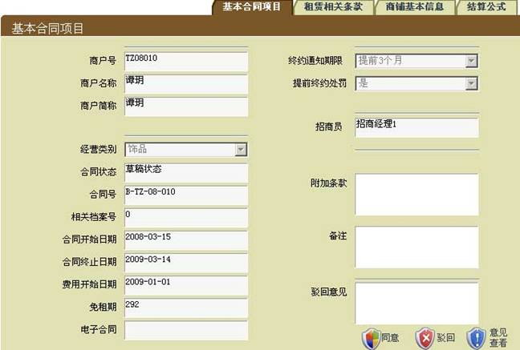 |
| 图(3-12) |
| 按钮“驳回”：如对合同有异议，在备注栏填写驳回意见，点“驳回”按钮，弹出驳回窗口，选择需要驳回的工作流节点步骤，即完成驳回；被驳回合同返回到合同录入人员处，重新修改录入。 |
| 按钮“同意”：如对合同没有异议，那么点“同意”按钮，即该合同完成审批工作，此合同生效，完成了整个合同的工作流。 |
|
| 租赁合同变更 |
| 租赁合同变更包括租赁合同期限变化、租金公式变化等。 |
| 正常情况下，租赁合同变更是需要工作流流转审批才能完成的；考虑系统实施进展，系统提供功能修改已经审批的合同，经此功能修改后的合同不用走审批流程，而直接生效。 |
|
用户登录系统后，点击菜单【租约管理】->【修改已审批合同】，在弹出合同列表中，选择需要变更的合同，进入“租赁合同录入”界面，如下图（图3-13）； |
| 在此界面中，选择不同分栏查看合同条款，修改完成后，在当前页面中“保存”，合同变更即完成。 |
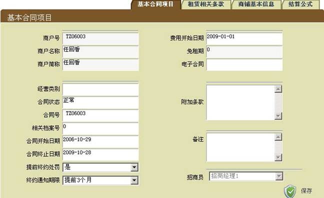 |
| 图(3-13) |
|
| 合同终止 |
| 合同终止是指在合同提前终止；在系统中，合同提前终止是需要工作流流转审批的； |
| 合同终止录入 |
| 用户角色为财务会计的用户登录到系统后，选择系统的工作流区（工作导航台）中，选择【租约管理】->【合同终止】->【合同终止录入】，进入合同终止录入，界面如下图（图3-21）： |
| 在“合同号”中输入需要终止的合同号，按回车键或者点击“合同号”后面的按钮，查到数据后，系统将查询到相关合同数据。 |
| 核准无误后，在“合同提前终止日期”中，输入提前终止日期；在“提前解约原因”中录入终约原因。 |
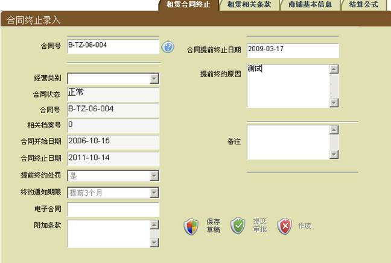 |
| 图(3-21) |
| 按钮“保存草稿”：保存录入的数据； |
| 按钮“提交审批”：将合同终止提交下一级节点进行审批。 |
| 合同终止复核审批 |
| 合同终止工作流审批共设置了两个节点，其操作用户角色分别是：“财务经理”、“财务副总”。 |
|
分别使用这两个角色的用户登录系统后，选择系统的工作流区（工作导航台）中，选择【租约管理】->【合同终止】中的合同编号（商户名称），进入合同终止审批，界面如下图（图3-22）： |
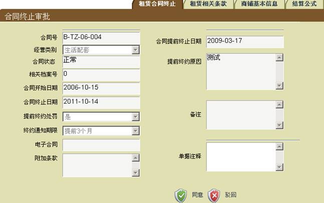 |
| 图(3-22) |
| 按钮“同意”：同意该份合同终止的审批，并流转下一个节点审批；如果没有下一个节点，合同终止将正式生效。 |
| 按钮“驳回”：不同意该份合同终止时，录入“单据注释”，系统将合同终止的流转到前一节点。 |
|
| 租赁合同续约 |
| 租赁合同续约是完成租赁合同的延期和延长期间的费用；在系统中，租赁合同续约是需要工作流流转审批的； |
| 租赁合同续约录入 |
| 用户角色为财务会计的用户登录到系统后，选择系统的工作流区（工作导航台）中，选择【租约管理】->【租赁合同续约】->【租赁合同续约录入】，进入租赁合同续约录入，界面如下图（图3-23）： |
| 在“合同号”中输入需要终止的合同号，按回车键或者点击“合同号”后面的按钮，查到数据后，系统将查询到相关合同数据。 |
| 系统默认延长期开始日期是延续合同结束日期的下一个日期，录入延长期结束日期后，点击“保存草稿”保存本页数据；分栏“现费用类别”只要是录入延长期间的结算公式；结算公式录入方法参见“租赁合同―合同录入”中结算公式录入方法。 |
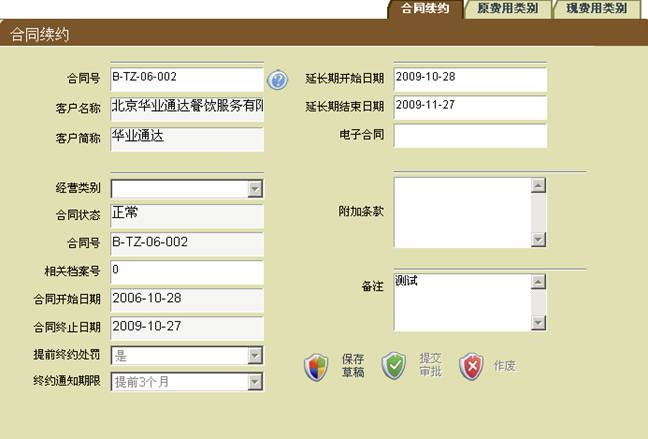 |
| 图(3-23) |
| 按钮“保存草稿”：保存录入的数据； |
| 按钮“提交审批”：将本次录入提交下一级节点进行审批。 |
| 注意：在提交审批前，需要录入完整的结算公式，也就是“现费用类别”。 |
|
| 租赁合同续约复核审批 |
| 租赁合同续约工作流审批共设置了两个节点，其操作用户角色分别是：“财务经理”、“财务副总”。 |
|
分别使用这两个角色的用户登录系统后，选择系统的工作流区（工作导航台）中，选择【租约管理】->【租赁合同续约】中的合同编号（商户名称），进入合同续约审批，界面如下图（图3-24）： |
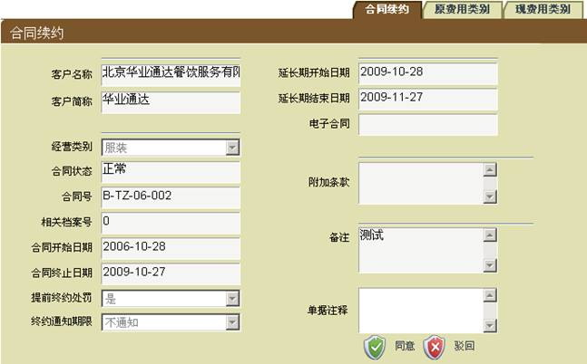 |
| 图(3-24) |
| 按钮“同意”：同意该份合同终止的审批，并流转下一节节点审批；如果是最后一个节点，合同终止将正式生效。 |
| 按钮“驳回”：不同意该份合同终止时，录入“单据注释”，系统将合同终止的流转到前一节点。 |
|
| 参数维护 |
| 费用类别维护 |
|
费用类别维护是对系统需要用到的费用类别在此进行定义和维护，从菜单栏中，点击【租约管理】->【参数维护】->【费用类别维护】，即可进入费用类别维护界面，如下图（图3-12）： |
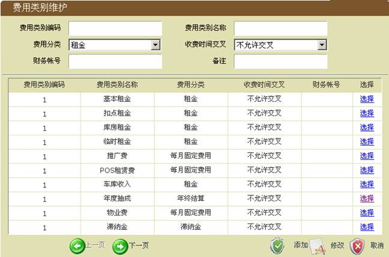 |
| 图(3-12) |
| 添加费用类别：输入需要添加的费用类别信息，点界面下的“添加”按钮，即可完成对费用类别的添加。 |
| 修改费用类别：从列表中选择需要修改的费用类别，修改完信息后，点“修改”按钮，即可完成对费用类别的修改。 |
|
| 品牌维护 |
|
品牌维护是对系统中需要用到的品牌在此进行定义和维护，从菜单栏中，点击【租约管理】->【参数维护】->【品牌维护】，即可进入品牌维护界面，如下图（图3-13）： |
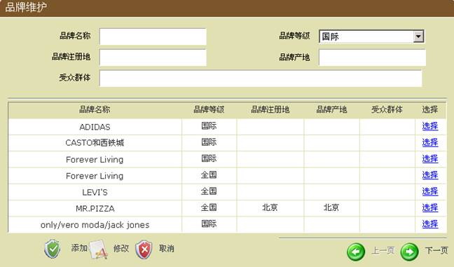 |
| 图(3-13) |
| 添加品牌：输入需要添加的品牌信息，然后点“添加”按钮，即可完成对品牌的添加。 |
| 修改品牌：从列表中选择需要修改的品牌， 修改完信息后，然后点“修改”按钮，即可完成对品牌的修改。 |
|
| 商户类型维护 |
|
商户类型维护是对商户类型的定义和维护，从菜单栏中，点击【租约管理】->【参数维护】->【商户类型维护】，即可进入商户类型维护界面，如下图（图3-14）： |
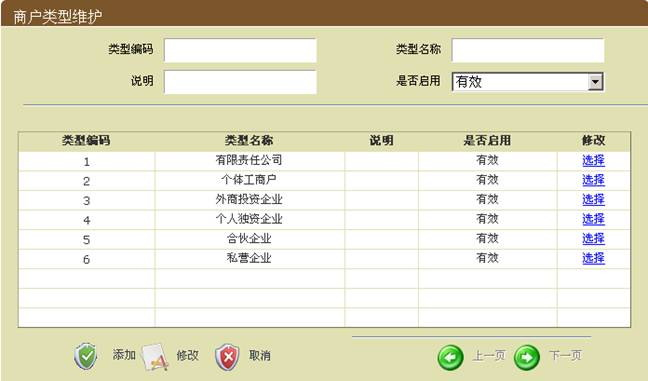 |
| 图(3-14) |
| 商户类型添加：输入商户类型信息，点“添加”按钮，即可完成对商户类型的添加。 |
| 商户类型修改：从列表中选择需要进行修改的商户类型，修改完信息后，点“修改”按钮，即可完成对商户类型的修改。 |
|
| 潜在商户资料查询 |
| 潜在商户资料查询是系统中已经存在的潜在商户，而又不是正式商户的资料进行查询，从菜单栏中，点击【租约管理】->【潜在商户资料查询】，即可进入潜在商户查询界面，如下图（图3-15）： |
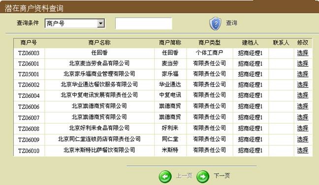 |
| 图(3-15) |
| 选择商户类型，输入商户类型，点“查询”按钮，即可将符合该查询条件的潜在商户全部查询出来，并显示在列表中。 |
| 在查询出来的潜在商户列表中，选择某一商户，即可以选择“基本信息”和“商户证照”，查看该潜在商户的详细信息。 |
|
| 潜在商户资料维护 |
| 潜在商户资料维护是系统中已经存在的潜在商户，而又不是正式商户的资料进行维护操作，从菜单栏中，点击【租约管理】->【潜在商户资料维护】，即可进入潜在商户维护界面，参见图3-15： |
| 选择商户类型，输入商户类型，点“查询”按钮，即可将符合该查询条件的潜在商户全部查询出来，并显示在列表中。 |
| 在查询出来的潜在商户列表中，选择需要修改的某一商户，即可以选择“基本信息”和“商户证照”，来进行基本信息和证照信息的修改。 |
| 基本信息修改界面如下图（图3-16）： |
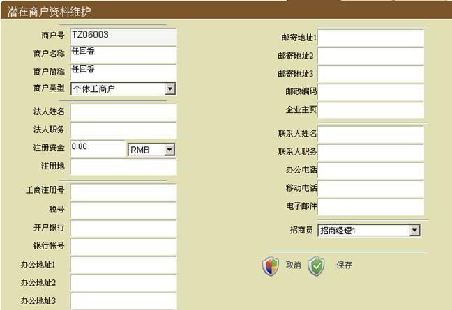 |
| 图(3-16) |
| 修改基本信息：修改完需要进行修改的基本信息，点“保存”按钮，即可完成对潜在商户资料的基本信息修改。 |
| 商户证照修改界面如下图（图3-17）： |
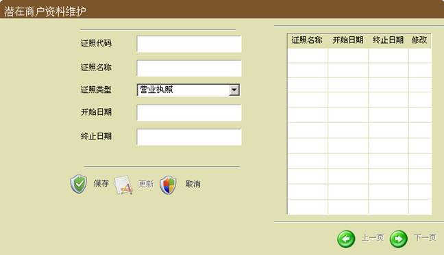 |
| 图(3-17) |
| 修改商户证照：在列表中选择需要进行修改的证照信息，修改完需要进行修改的证照信息，点“更新”按钮，即可完成对潜在商户资料的证照信息修改。 |
|
| 商户资料查询 |
| 商户资料查询是对系统中以后正式商户进行查询，从菜单栏中，点击【租约管理】->【商户资料查询】，即可进入商户资料查询界面，参见图3-18： |
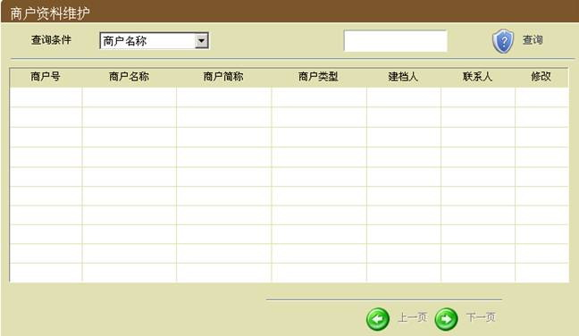 |
| 图(3-18) |
| 选择商户类型或输入商户简称，点“查询”按钮，即可将符合该查询条件的商户全部查询出来，并显示在列表中。 |
| 在查询出来的商户列表中，选择某一商户，即可以选择“基本信息”和“商户证照”，查看该商户的详细信息。 |
|
| 商户资料维护 |
| 商户资料维护是系统中已经存在的商户进行维护操作，从菜单栏中，点击【租约管理】->【商户资料维护】，即可进入商户资料维护界面，参见图3-18： |
| 选择商户类型，输入商户类型，点“查询”按钮，即可将符合该查询条件的商户全部查询出来，并显示在列表中。 |
| 基本信息修改界面如下图（图3-19）： |
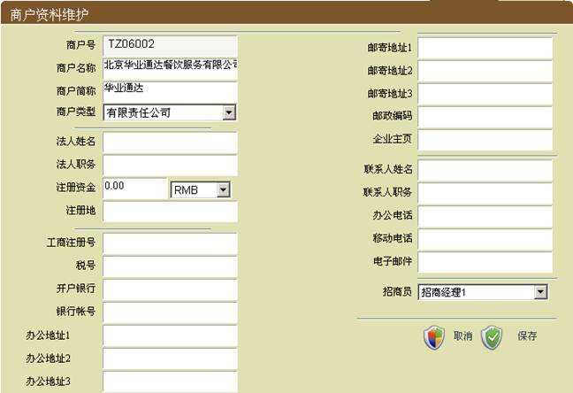 |
| 图(3-19) |
| 修改基本信息：修改完需要进行修改的基本信息，点“保存”按钮，即可完成商户资料的基本信息修改。 |
| 商户证照修改界面如下图（图3-20）： |
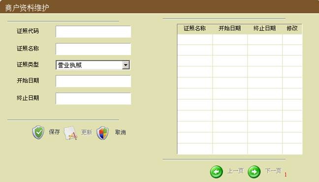 |
| 图(3-20) |
| 修改商户证照：在列表中选择需要进行修改的证照信息，修改完需要进行修改的证照信息，点“更新”按钮，即可完成对商户资料的证照信息修改。 |
| |
|